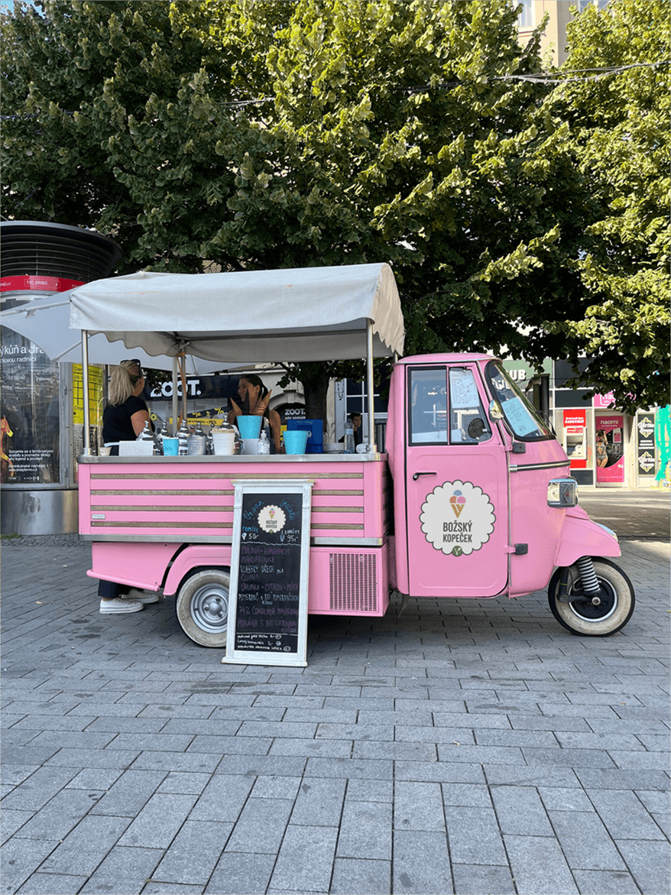

Redesign vizuální identity Tutti Frutti
Cukrárna Tutti Frutti se nachází na Mendelově náměstí v Brně. Pod cukrárnu spadají také značky Božský kopeček a Božská kombucha. Tento projekt jsem vytvořil jako svoji maturitní práci. Byl vytvořen přesně podle požadavků provozních cukrárny, je ale na nich, jestli můj design využijí.

